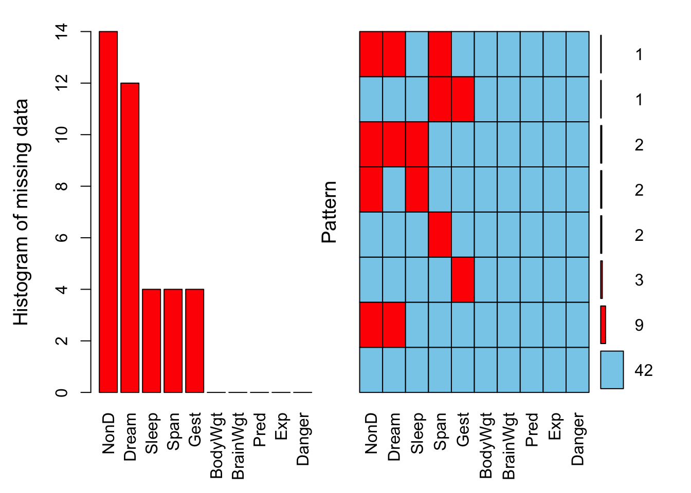
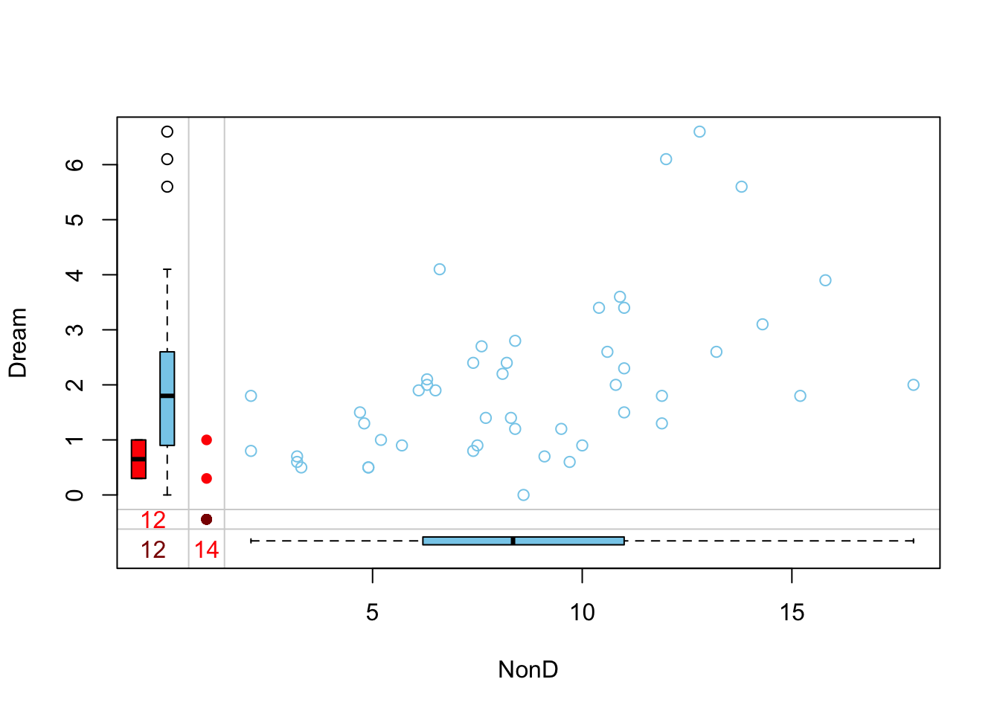
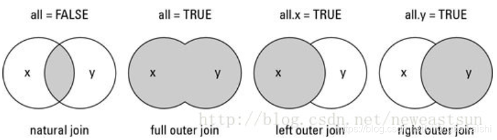

mydata <- readRDS("data/r_basic/lms_ess.rds")数据处理基本函数
1 数据展示
载入示例数据：
1.1 展示最大值、最小值、平均数、中位数、缺失值数量
summary(mydata) year year2 age race marriage
2010:111 2010-2011:216 Min. :23.00 White :554 Married :386
2011:105 2012-2013:217 1st Qu.:48.00 Black : 99 Single/Unmarried:166
2012:118 2014-2016:300 Median :55.00 Others: 76 Others :148
2013: 99 Mean :55.77 NA's : 4 NA's : 33
2014:100 3rd Qu.:64.00
2015:101 Max. :95.00
2016: 99
grade grade2 tumor_size
Well differentiated; Grade I : 58 Low-grade :181 Min. : 4.0
Moderately differentiated; Grade II :123 High-grade:323 1st Qu.: 60.0
Poorly differentiated; Grade III :105 Gx :229 Median : 95.0
Undifferentiated; anaplastic; Grade IV:218 Mean :107.9
NA's :229 3rd Qu.:135.0
Max. :950.0
NA's :79
his T_stage T_stage_plus N_stage M_stage figo figo_plus
LMS:448 T1:499 T1b :340 N0 :680 M0:628 I :442 IB :290
ESS:285 T2:131 T1a :114 N1 : 49 M1:105 II : 82 IA :109
T3: 85 T2a : 67 NA's: 4 III: 89 IVB :105
T4: 18 T3a : 57 IV :120 IIIA : 39
T2b : 55 IIIC : 32
T1 : 45 (Other): 30
(Other): 55 NA's :128
peri surg alnd plnd lnd rad
Negtive :674 TH+BSO:629 No :586 No :417 No :412 No :609
Malignant: 59 TH : 47 Yes :111 Yes :282 Yes :288 Yes :117
RH/EH : 57 NA's: 36 NA's: 34 NA's: 33 NA's: 7
chem dead status time income
No :365 0:365 0 :365 Min. : 2.00 <$60,000 :186
Yes :314 1:368 1 :332 1st Qu.: 15.00 $60,000-$74,999:293
NA's: 54 2 : 29 Median : 43.00 >$75,000 :254
NA's: 7 Mean : 47.53
3rd Qu.: 76.00
Max. :119.00
1.2 展示变量数量和样本数量
展示变量（列）数
展示行数
综合展示
展示所有变量名
colnames(mydata) [1] "year" "year2" "age" "race" "marriage"
[6] "grade" "grade2" "tumor_size" "his" "T_stage"
[11] "T_stage_plus" "N_stage" "M_stage" "figo" "figo_plus"
[16] "peri" "surg" "alnd" "plnd" "lnd"
[21] "rad" "chem" "dead" "status" "time"
[26] "income" c("year", "year2", "age", "race", "marriage", "grade", "grade2",
"tumor_size", "his", "T_stage", "T_stage_plus", "N_stage", "M_stage",
"figo", "figo_plus", "peri", "surg", "alnd", "plnd", "lnd", "rad",
"chem", "dead", "status", "time", "income")展示所有行名称
```{r}
#| eval: false
rownames(mydata)
```展示某个变量的所有值及其频数
1.3 展示缺失值的构成
加载案例数据：这里用VIM包内自带的sleep数据集为例进行演示。该数据集显示了两种安眠药对10名患者的影响(与对照组相比，睡眠时间的增加量)。其中就包含了很多缺失值。
BodyWgt BrainWgt NonD Dream Sleep Span Gest Pred Exp Danger
1 6654.000 5712.0 NA NA 3.3 38.6 645 3 5 3
2 1.000 6.6 6.3 2.0 8.3 4.5 42 3 1 3
3 3.385 44.5 NA NA 12.5 14.0 60 1 1 1
4 0.920 5.7 NA NA 16.5 NA 25 5 2 3
5 2547.000 4603.0 2.1 1.8 3.9 69.0 624 3 5 4
6 10.550 179.5 9.1 0.7 9.8 27.0 180 4 4 4首先展示缺失值的比例。
左侧直方图展示单个变量的缺失比例，其中NonD缺失比例大于20%。
右侧直方图展示各个变量的缺失模式。如第一行表示NonD、Dream和Span 3个变量共同缺失的比例为1.6%。NonD的缺失比例=1.6%+3.2%+3.2%+14.5%=22.5%。所有变量均无缺失值的个案占67.7%
输出的结果部分同样展示了各个变量缺失的具体比例
library(VIM)
aggr_plot<-aggr(sleep,
prop=T,
numbers=T,
sortVars=TRUE,
gap=2,
ylab=c("Histogram of missing data","Pattern"))
Variables sorted by number of missings:
Variable Count
NonD 0.22580645
Dream 0.19354839
Sleep 0.06451613
Span 0.06451613
Gest 0.06451613
BodyWgt 0.00000000
BrainWgt 0.00000000
Pred 0.00000000
Exp 0.00000000
Danger 0.00000000展示缺失值的数量。输出的结果部分展示了各个变量缺失的具体数量。
aggr_plot<-aggr(sleep,
prop=F,
numbers=T,
sortVars=TRUE,
gap=2,
ylab=c("Histogram of missing data","Pattern"))
Variables sorted by number of missings:
Variable Count
NonD 14
Dream 12
Sleep 4
Span 4
Gest 4
BodyWgt 0
BrainWgt 0
Pred 0
Exp 0
Danger 0以表格的形式展示各个变量的缺失模式（同右侧图形）
summary(aggr_plot)
Missings per variable:
Variable Count
BodyWgt 0
BrainWgt 0
NonD 14
Dream 12
Sleep 4
Span 4
Gest 4
Pred 0
Exp 0
Danger 0
Missings in combinations of variables:
Combinations Count Percent
0:0:0:0:0:0:0:0:0:0 42 67.741935
0:0:0:0:0:0:1:0:0:0 3 4.838710
0:0:0:0:0:1:0:0:0:0 2 3.225806
0:0:0:0:0:1:1:0:0:0 1 1.612903
0:0:1:0:1:0:0:0:0:0 2 3.225806
0:0:1:1:0:0:0:0:0:0 9 14.516129
0:0:1:1:0:1:0:0:0:0 1 1.612903
0:0:1:1:1:0:0:0:0:0 2 3.225806通过marginplot分析缺失值。空心的湖蓝色圆圈表示非缺失值，红色实心圆圈表示缺失值，深红色实心圆圈表示两个变量均缺失。图左侧的红色箱型图显示了在保留NonD缺失值的情况下Dream的分布，蓝色箱型图显示了删除NonD缺失值后Dream的分布。图表底部的框图正好相反，反映了在保留和删除Dreamq缺失值的情况下NonD的分布情况。如果数据是完全随机缺失(MCAR : missing completely at random)，那么红色和蓝色箱型图将十分接近
marginplot(sleep[3:4])
删除所有缺失值
sleep<-na.omit(sleep)2 数据整理
2.1 排序
[1] 23 24 24 24 26 27 27 27 27 28 [1] 95 92 89 87 85 85 85 84 82 82 his tumor_size
1 LMS 10
2 LMS 12
3 LMS 12
4 LMS 15
5 LMS 17mydata[445:455,c("his", "tumor_size")] his tumor_size
445 LMS NA
446 LMS NA
447 LMS NA
448 LMS NA
449 ESS 4
450 ESS 5
451 ESS 5
452 ESS 9
453 ESS 10
454 ESS 10
455 ESS 12也可用自带base包内的order()函数排序：
2.2 重新命名行、列
重新命名变量（列）
设置行名
rownames(mydata) <- mydata$ID # 将ID列设置为行名（注意不能有重复值）2.3 数据筛选
提取某几列数据形成新的数据集
vnumber <- mydata[, 4:16] # 提取第4-16列的数据形成新的“vnumber”数据集
vnumber <- mydata[,c(2:12,16)] # 提取2-12列和第16列的数据提取指定行数的数据
mydata_less <- mydata[1:100, ]#提取1-100行的数据筛选数据
筛选出低级别、接受了放疗的病例，并生成新的”new_data”数据集
#方法一
new_data<-subset(mydata,grade == "Well differentiated; Grade I" & rad == "Yes")
new_data[,c("grade", "rad")] grade rad
140 Well differentiated; Grade I Yes
160 Well differentiated; Grade I Yes
486 Well differentiated; Grade I Yes
541 Well differentiated; Grade I Yes
593 Well differentiated; Grade I Yes
697 Well differentiated; Grade I Yes#也可用“｜”（或者），“！”（NOT）连接
#方法二
new_data <- mydata[which((mydata$grade == "Well differentiated; Grade I") &
(mydata$rad == "Yes")),]
new_data[,c("grade", "rad")] grade rad
140 Well differentiated; Grade I Yes
160 Well differentiated; Grade I Yes
486 Well differentiated; Grade I Yes
541 Well differentiated; Grade I Yes
593 Well differentiated; Grade I Yes
697 Well differentiated; Grade I Yes2.4 合并两个数据集
纵向合并
即增加个案，要求两个数据集具有相同的列名及列数
rbind_data <- rbind(mydata, mydata2)横向合并
直接通过cbind()函数合并数据集，要求两个数据集具有相同的行数及顺序
total <- cbind(dataframeA, dataframeB)以某一列（如学号等）匹配两个数据集
详细解读：https://blog.csdn.net/chongbaikaishi/article/details/115740560
# 以"probe_id"为匹配标准匹配探针id和gene symbol
exptab1 <- merge(x = ids,
y = expset1,#x、y为要合并的数据框或者对象
by ="probe_id", #指定以哪一列为标准匹配两个数据集。
#如果有多个匹配项，则所有可能的匹配项各贡献一行。
all.x=F,#是否将没有匹配到y数据集的行也保留下来，并以NA替代。
#默认为FALSE，只有x与y数据框相匹配的行会被包含在输出结果中
all.y=F)#与上面类似如果两个数据集要用来匹配的列的列名不同则可用by.x和by.y指定。如下面的代码就是用id2symbol数据集中的ENSEMBL列去匹配rawcount数据集中的GeneID列
rawcount <- merge(id2symbol,
rawcount,
by.x="ENSEMBL",
by.y="GeneID",
all.y=T)#对于没有匹配到的GeneID以NA替代
2.5 去重（保留唯一值）
生成带有重复值的示例数据
set.seed(123)
mydata = data.frame(ID = c(1:10,9,4,4,9,9,2), y = rnorm(16))
mydata <- rbind(mydata, mydata)
mydata ID y
1 1 -0.56047565
2 2 -0.23017749
3 3 1.55870831
4 4 0.07050839
5 5 0.12928774
6 6 1.71506499
7 7 0.46091621
8 8 -1.26506123
9 9 -0.68685285
10 10 -0.44566197
11 9 1.22408180
12 4 0.35981383
13 4 0.40077145
14 9 0.11068272
15 9 -0.55584113
16 2 1.78691314
17 1 -0.56047565
18 2 -0.23017749
19 3 1.55870831
20 4 0.07050839
21 5 0.12928774
22 6 1.71506499
23 7 0.46091621
24 8 -1.26506123
25 9 -0.68685285
26 10 -0.44566197
27 9 1.22408180
28 4 0.35981383
29 4 0.40077145
30 9 0.11068272
31 9 -0.55584113
32 2 1.78691314通过duplicated()函数检查某一列是否有重复值，及有多少重复值
table(duplicated(mydata$ID))
FALSE TRUE
10 22 通过unique()函数去除完全相同的行。unique()函数：一行的所有数据都相同认定为重复
mydata <- unique(mydata)
mydata ID y
1 1 -0.56047565
2 2 -0.23017749
3 3 1.55870831
4 4 0.07050839
5 5 0.12928774
6 6 1.71506499
7 7 0.46091621
8 8 -1.26506123
9 9 -0.68685285
10 10 -0.44566197
11 9 1.22408180
12 4 0.35981383
13 4 0.40077145
14 9 0.11068272
15 9 -0.55584113
16 2 1.78691314通过distinct()函数，去除ID列重复的数据
2.6 变量的赋值/替换
当需要对一个数据集的多个变量进行转换时，可通过within(data, {expression})函数将括号内的操作限定到当前数据集中，避免”$“的反复使用，简化代码。函数within()与函数with()类似，不同的是within()允许你修改数据框:
2.7 转换变量类型
将结局变量转换成因子变量,ordered=F,用于定义无序多分类变量，起到设置哑变量的作用；ordered=T用于定义有序多分类变量。如果变量的取值以英文字符表示，那么默认以变量首字母的顺序编号赋值；如果变量的取值已经转换成数字，那么默认按照编号的大小依次赋值。可以通过指定”levels”选项来覆盖默认排序。
通过lapply函数批量转换因子变量
mydata[2:14] <- lapply(mydata[2:14], factor) # 转换几个连续列的因子变量批量转换多个指定因子变量
转换为数值型变量
mydata$grade <- as.numeric(mydata$grade)
mydata = lapply(mydata, as.numeric) # 将所有的变量转换成数值型2.8 哑变量设置
3 数学函数
abs(-4) #取绝对值[1] 4sqrt(16) #开平方根[1] 4log(4,base=2) #取2为底的对数[1] 2log10(100) #取10为底的对数[1] 2log(2) #取2的自然对数[1] 0.6931472exp(2) #取e的指数函数[1] 7.389056#设置小数位数
ceiling(3.14159) #取不小于x的最小整数（有小数点一律进一位）[1] 4floor(3.99999) #取不大于x的最大整数（忽略小数点）[1] 3sprintf("%0.3f", 3.14159) #四舍五入保留3位小数[1] "3.142"round(3.14159,digits=3) #同上。注意该函数在处理科学计数法时无法有效保留目标小数位数[1] 3.1424 自定义函数
R语言可以自定义函数，也可以使用其自带的函数。
R语言中，自定义函数的一般格式为：
函数名 <- function（输入1，……，输入n）{
函数体
return（返回值）
}其中，return并不是必需的，默认函数体最后一行的值作为返回值，即return完全可以换成”返回值”。下面以判断score为优良及格差的代码进行讲解。案例来源：https://zhuanlan.zhihu.com/p/441710174。
首先对于不用函数的情况
score = 73
if(score >= 90){
res = "优"
}else if(score >=70){
res = "良"
}else if(score >= 60){
res = "及格"
}else{
res = "不及格"
}
res#输出判断结果[1] "良"接下来我们自定义一个scorejudge()函数实现对单个成绩对判断。实际上就是把上面的代码封装起来
scorejudge<-function(x){
if(score >= 90){
res = "优"
}else if(score >=70){
res = "良"
}else if(score >= 60){
res = "及格"
}else{
res = "不及格"
}
paste0("该同学的分数等级为",res)
}
scorejudge(score)#就像调用R自带函数一样调用我们自己编写的函数[1] "该同学的分数等级为良"如若想要同时查询多个分数，则需要对原来的代码进行修改，加入for循环语句
scorejudge<-function(x){
n = length(x)#首先确定循环次数，即x中有多少个分数，下面的for循环就要运行多少次
res = vector("character",n)#建立一个和输入的分数个数相同的空向量，用来放每次for循环的输出结果
for(i in 1:n){
if(x[i] >= 90){
res[i] = paste0(i,"号同学的分数等级为","优")
} else if(x[i] >=70){
res[i] = paste0(i,"号同学的分数等级为","良")
} else if(x[i] >= 60){
res[i] = paste0(i,"号同学的分数等级为","及格")
} else{
res[i] = paste0(i,"号同学的分数等级为","不及格")
}
}
res #输出最终的res向量
}
scorejudge(c(34,67,89,95))[1] "1号同学的分数等级为不及格" "2号同学的分数等级为及格"
[3] "3号同学的分数等级为良" "4号同学的分数等级为优"